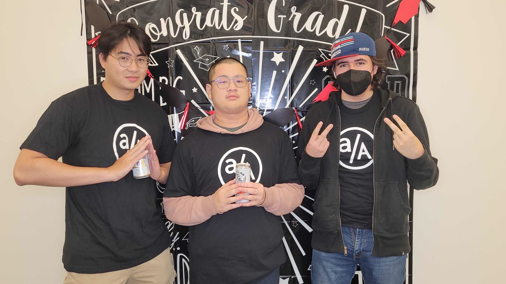

Why software engineer?
“It is far more common for people to allow ego to stand in the way of learning.” ― Ray Dalio, Principles
For a long period of time during college, I lost my motivation on learning anything new due to the fact that I didn't want to look amateur on things that I haven't done, which end up preventing me from reaching my goal. Looking back, I realized how important it was to step back and do some meta-thinking of why things aren't going in a right direction.

What made me decide to switch:
What I learnt after the bootcamp:
Being a software engineer helped straighten my thoughts, it make me a better decision maker.
Most importantly, it reignited my desire to learn, to not care if I look stupid during the quest of making something happen.
It encouraged me to communicate, to listen, to exchange idea. Most importantly, to think rationally about "bugs" due to
ignorance and look for the real solution to a problem